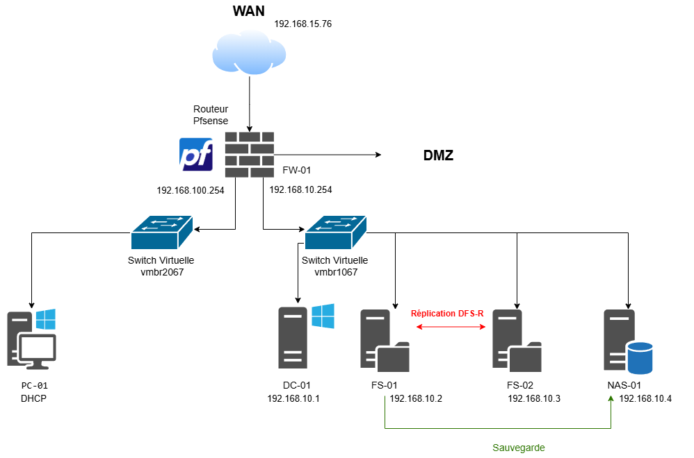

Étape 1 sur 7
Architecture et segmentation
Trois zones isolées par pfSense, sur une plateforme de virtualisation Proxmox.
Objectif
Supprimer le point de défaillance unique d'un serveur de fichiers : si une machine tombe, les données restent accessibles. Toute l'infrastructure est virtualisée sous Proxmox, avec Windows Server 2025 et un pare-feu pfSense.
Segmentation par le pare-feu
Le pare-feu pfSense (FW-01) route et filtre trois zones : le réseau des serveurs, le réseau des postes clients et une DMZ. Les serveurs sont ainsi isolés des postes utilisateurs, et seuls les flux nécessaires sont autorisés.
Rôle de chaque machine
| Rôle | Machine | Adresse IP | Réseau |
|---|---|---|---|
| Pare-feu pfSense | FW-01 | 192.168.10.254 / 192.168.100.254 | Serveurs / Clients |
| Contrôleur de domaine | DC-01 | 192.168.10.1 | Serveurs |
| Serveur de fichiers principal | FS-01 | 192.168.10.2 | Serveurs |
| Serveur de fichiers secondaire | FS-02 | 192.168.10.3 | Serveurs |
| Sauvegarde (TrueNAS) | NAS-01 | 192.168.10.4 | Serveurs |
| Poste Windows 11 de test | PC-01 | DHCP | Clients |
Captures

Savoir-faire mobilisés
- Proxmox
- pfSense
- Segmentation réseau
- Plan d'adressage